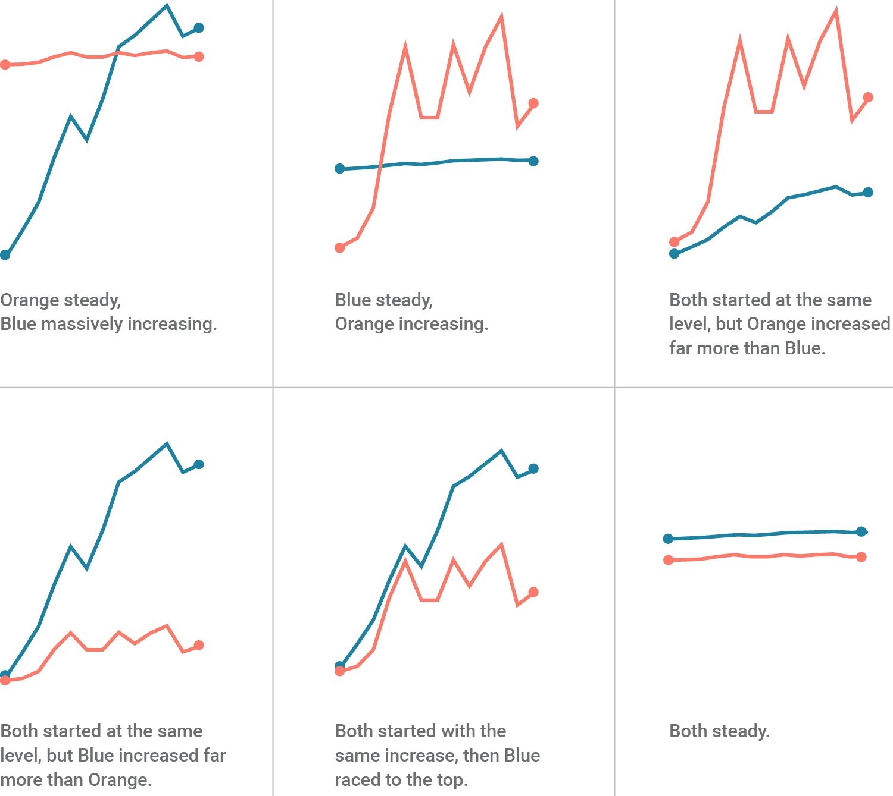

Introduction
In some cases, a graph with two y-axes is desired for visualizing two different sets of data. However, this is sometimes frowned upon since the required scaling of the data can be adjusted to fit the desired narrative.

Source: https://blog.datawrapper.de/dualaxis/
With that said, there still are situations were dual y-axes are appropriate. This vignette will show you how to do this in R with ggplot2, despite the package authors disagreements .
Prepare data
# devtools::install_github("derekmichaelwright/agData")
library(agData) # Loads: tidyverse, ggpubr, ggbeeswarm, ggrepel
# Prep data
xx <- read.csv("dual_y_axis_data.csv") %>%
mutate(Date = as.Date(Date))
DT::datatable(xx)
Single y-axis
First lets create a plot of Air Temperature.
mp1 <- ggplot(xx, aes(x = Date)) +
geom_line(aes(y = Air.Temperature, color = "1"), size = 1.25) +
scale_color_manual(name = NULL, values = "darkred", labels = "Air Temp") +
scale_x_date(date_labels = "%b" , date_breaks = "1 month") +
labs(title = "Environmental Data", y = "Temperature (\u00B0C)", x = NULL) +
theme_agData(legend.position = "bottom") +
labs(caption = "\xa9 www.dblogr.com/ | Data: AGILE")
mp1
Now lets add a second set of data (Soil Temperature), in this case it uses the same unit as the first (°C).
mp2 <- mp1 +
geom_line(aes(y = Soil.Temperature, color = "2"), size = 1.25) +
scale_color_manual(name = NULL, values = c("darkred","red"),
labels = c("Air Temp","Soil Temp"))
mp2
But when we add another data set (Day Length) using different units (hours), problems arise.
mp3 <- mp2 +
geom_line(aes(y = Day.Length, color = "3"), size = 1.25) +
scale_color_manual(name = NULL, values = c("darkred","red","steelblue"),
labels = c("Air Temp","Soil Temp","DayLength"))
mp3
Data Scaling
In this case, the range of Day Length and Temperature are drastically different.
max(xx$Air.Temperature) - min(xx$Air.Temperature)## [1] 31.9055max(xx$Day.Length) - min(xx$Day.Length)## [1] 5.78In order to present the data better, we need to rescale it
\[y_{scaled}=(y_{2i}-min(y_2))*\frac{max(y_1)-min(y_1)}{max(y_2)-min(y_2)}+min(y_1)\]
where:
y1 = Set of values you want to scale to
y2 = Set of values to be rescaled to min and max of y1
y2i = Value from the y2 set to be rescaled
in our case:
y1 = Air + Soil Temperature
y2 = Day Length
y2i = Day Length on a specific day
y1_min <- min(c(xx$Soil.Temperature, xx$Air.Temperature))
y1_max <- max(c(xx$Soil.Temperature, xx$Air.Temperature))
y2_min <- min(xx$Day.Length)
y2_max <- max(xx$Day.Length)
xx <- xx %>%
mutate(Day.Length_scaled = (Day.Length - y2_min) * (y1_max - y1_min) /
(y2_max - y2_min) + y1_min)Scaling the data can also be done with the rescale function from the scales package
xx <- xx %>%
mutate(Day.Length_scaled = scales::rescale(Day.Length, to = c(y1_min, y1_max)))mp4 <- mp3 +
geom_line(data = xx, aes(y = Day.Length_scaled, color = "4"), size = 1.25) +
scale_color_manual(name = NULL, values = c("darkred","red","steelblue","darkblue"),
labels = c("Air Temp","Soil Temp","Day Length","Day Length*"))
mp4
That looks better. However, we still need to add the second y-axis, which will require some more math.
\[y_{2i}=(y_{scaled}-min(y_1))*\frac{max(y_2)-min(y_2)}{max(y_1)-min(y_1)}+min(y_2)\]
Double y-axis
mp5 <- mp2 +
geom_line(data = xx, aes(y = Day.Length_scaled, color = "4"), size = 1.25) +
scale_color_manual(name = NULL, values = c("darkred","red","darkblue"),
labels = c("Air Temp","Soil Temp","Day Length")) +
scale_y_continuous(sec.axis = sec_axis(~ (. - y1_min) * (y2_max - y2_min) /
(y1_max - y1_min) + y2_min,
name = "Hours", breaks = 9:14))
mp5
To help better visualize this rescaling, we will use a simpler example.
\[y_{scaled}=(y_{2i}-min(y_2))*\frac{max(y_1)-min(y_1)}{max(y_2)-min(y_2)}+min(y_1)\]
\[y_{scaled}=(7.5-5)*\frac{40-20}{10-5}+20)=30\]
\[y_{2i}=(y_{scaled}-min(y_1))*\frac{max(y_2)-min(y_2)}{max(y_1)-min(y_1)}+min(y_2)\]
\[y_{2i}=(30-20)*\frac{10-5}{40-20}+5=7.5\]
xx <- data.frame(x = 1:20, y = 1:20)
ggplot(xx, aes(x = x, y = y)) +
geom_hline(yintercept = 30, color = "blue", size = 2) +
theme_agData(axis.text.y = element_text(color = "red", size = 10, face = "bold")) +
scale_y_continuous(limits = c(20, 40),
sec.axis = sec_axis(~ (. - 20) * (10 - 5) / (20 - 0) + 5,
name = "y2", breaks = 5:10)) +
labs(caption = "\xa9 www.dblogr.com/ | Data: AGILE")
© Derek Michael Wright www.dblogr.com/